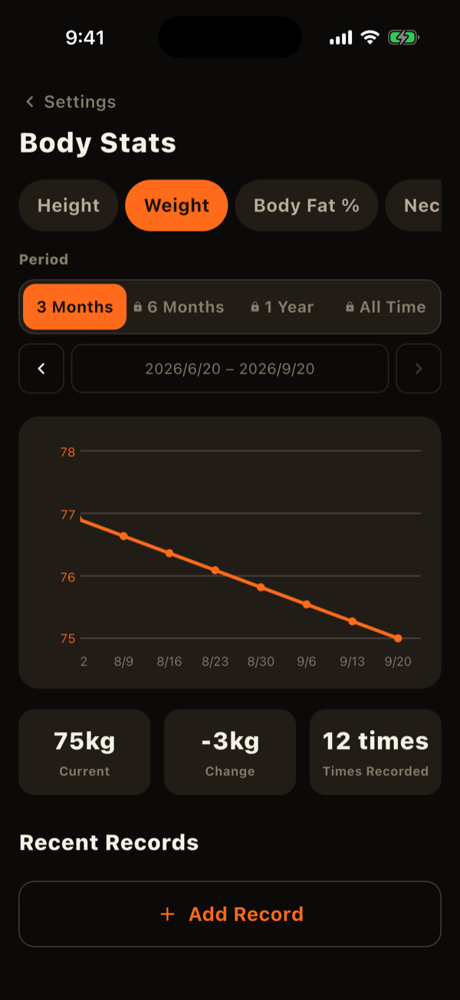
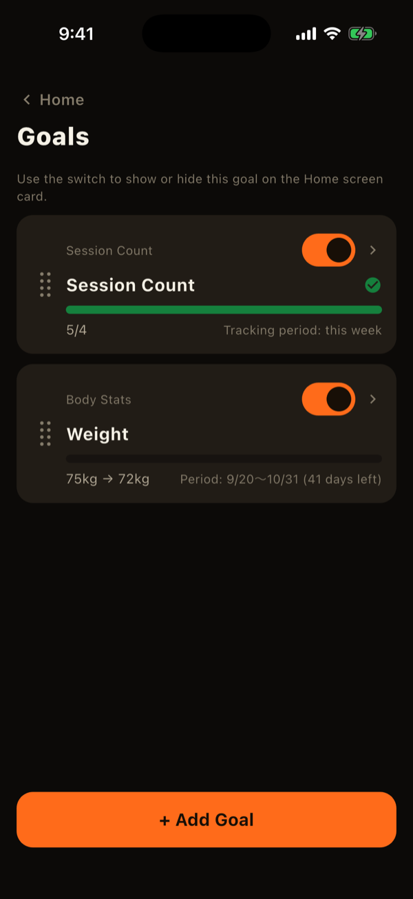
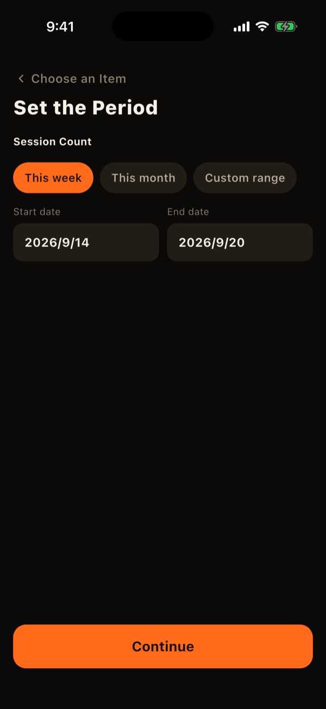
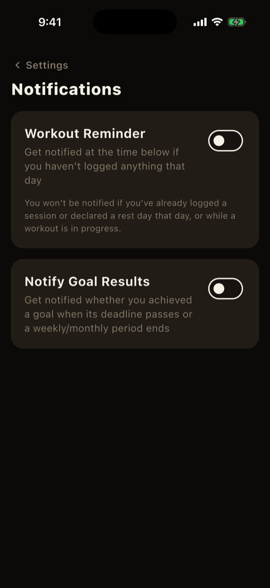
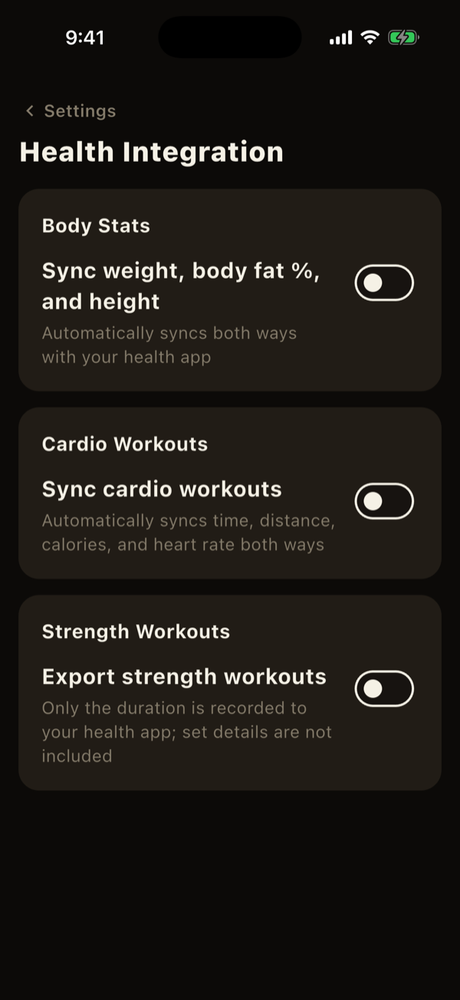

Alongside your workout logs, LiFTY covers changes in your body, goals, and connections to other apps. This page covers them all.
Body stats
Open it from Settings > Body stats. You can record 15 measurements: weight, body fat, height, neck, chest, waist, hips, upper arm, forearm, thigh, and calf (left and right recorded separately where applicable). Everything except weight and body fat is optional.
- Switch measurements with the chips to see the chart, current value, change, and recent entries. Changes are not color-coded as good or bad.
- Tap a row under "Recent entries" to edit or delete that day's record.
- Chart periods up to 3 months are free.

Goals
Open the goals list with the icon at the top right of Home, and add one with "+". There are five categories:
- Body stats: a target for one of the 15 measurements.
- Sets: sets in a period, by body part or by exercise.
- Volume: volume in a period, per exercise.
- Workouts: how many workouts you complete in a period.
- Records: a target for actual 1RM, estimated 1RM, or weight x reps.
For sets, volume, and workouts, choose "This week," "This month," or a custom range. This week and this month automatically continue into the next period. Body stats and records use a start date and a deadline, and deadlines cannot be extended. Whether it is an increase or decrease goal is decided automatically by comparing your target to your current value.
- Track progress on the Home goals card and in the goal list and detail screens. When you reach a goal, its progress bar turns green with a check mark.
- In the list you can drag to reorder goals and choose which ones appear on Home.
- Goals whose deadline or period has passed become "ended goals" marked achieved or missed. Use "Set again with the same details" to recreate one.


Home screen widget (iOS)
You can also check goal progress in an iPhone Home Screen widget (small, medium, or large). Choose which goals it shows in the widget's edit screen. It refreshes when you open or leave the app.
Notifications
Under Settings > Notifications you can turn on two kinds of notification (both are off by default):
- Log reminder: at a time you choose, if you have no workout and no rest day recorded that day. No reminders in your first 7 days.
- Goal results: tells you the result of a goal whose deadline or period has ended.
Notifications are created on your device. If you don't open the app for a full day, a notification may not arrive.

Health app sync
Under Settings > Health sync you can connect to Apple Health (Health Connect on Android). Only data that exists on both platforms is supported.
- Body stats: weight, body fat, and height sync in both directions. Values recorded by other apps and devices are imported into LiFTY, and values you record in LiFTY are written to Health.
- Cardio: workouts such as runs and walks in Health are imported as records of an exercise you choose in advance. Completed cardio sessions are written to Health.
- Strength: completed sessions are written to Health only (nothing is imported from Health).
The first sync also imports your past history. After that, only new data is synced when you open the app. Each time you turn a sync on, the operating system asks for permission.

LiFTY is a workout log you can start using right away, with no account required.
Download on the App Store